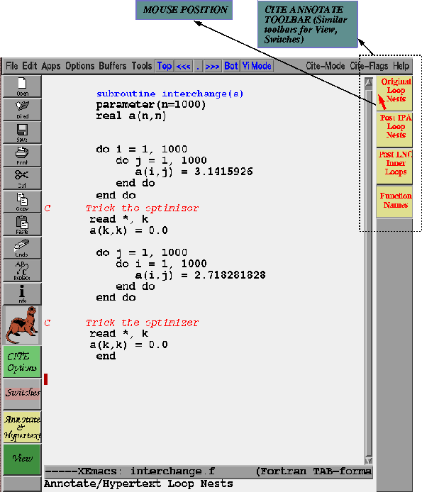

In CITE there are several ways of annotating loop nests. The most convenient is using the Annotate/Hypertext toolbar. Clicking on the Annotate/Hypertext toolbar button brings up a new toolbar on the right as the following figure suggests. Clicking on the toolbar button "Original Loop Nests" would cause CITE to annotate and hypertext the loopnests in the source.

After we annotate the loop nests we get the following. What does this mean? The loop that LNO picks to be the innermost loop is highlighted in cyan and rest of the loops are highlighted in yellow. So in the first loop nest we see that LNO has interchanged the two loops to improve locality. It has left the 2nd loop nest in the same order as it was in the source.